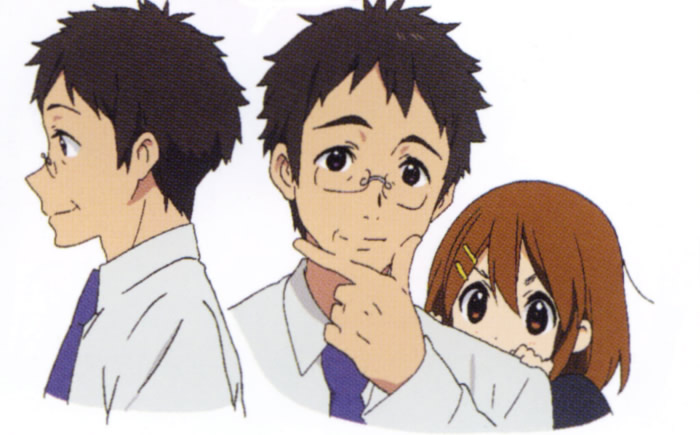
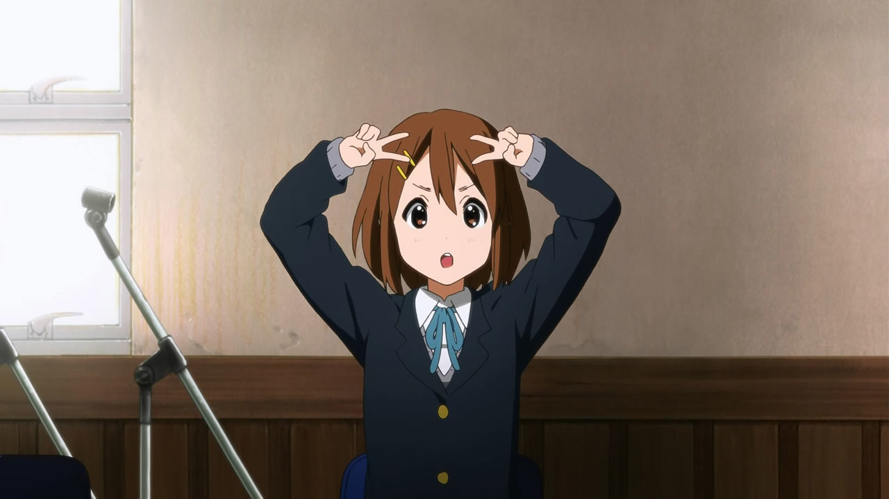
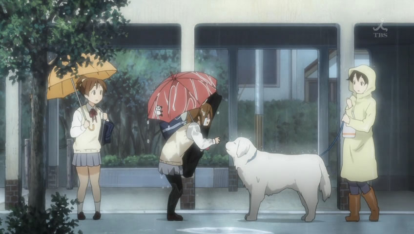
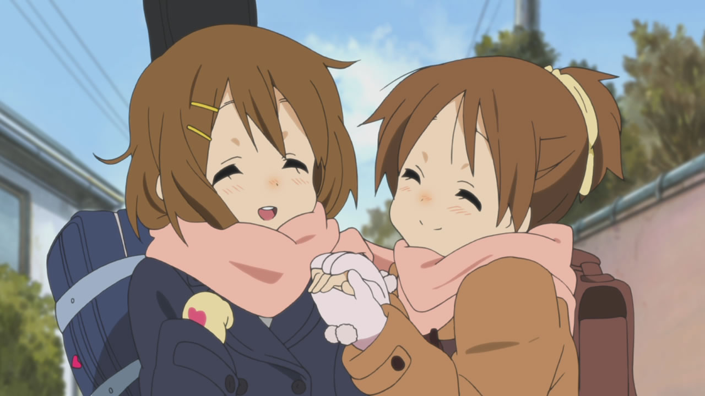
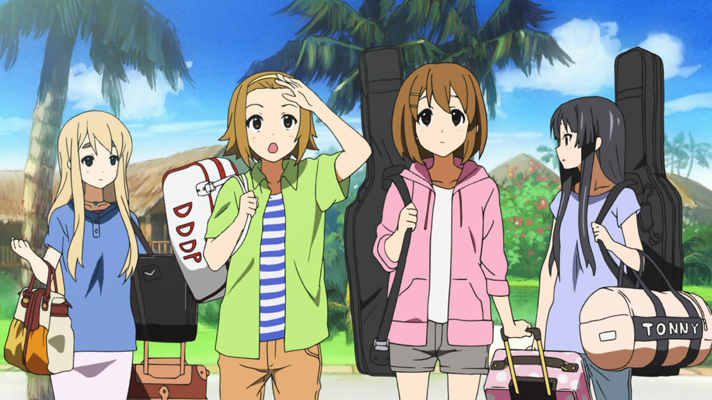
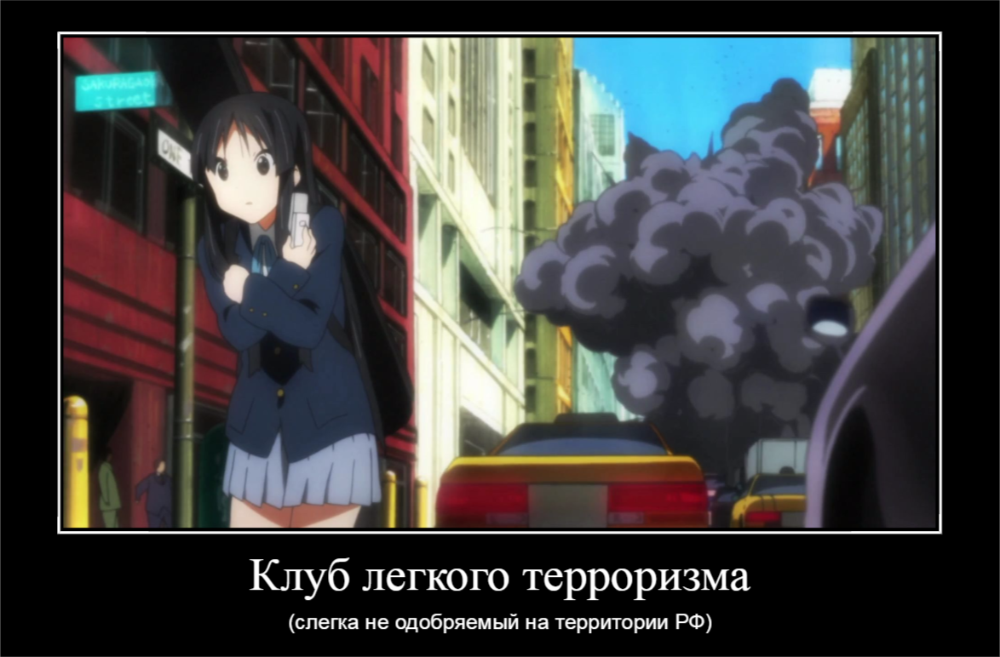
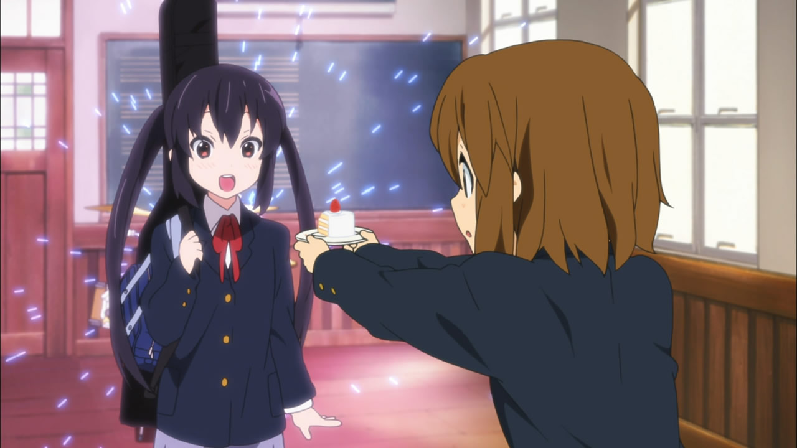
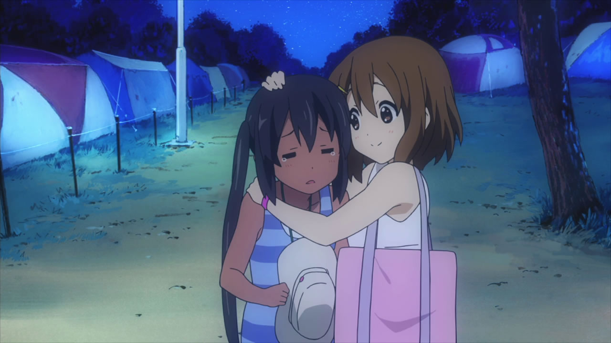

K-on. Клуб легкого терроризма.
Пришла пора открыть правду про K-on.
На самом деле, родители Юи - наркоторговцы, торгующие коксом и оружием в спорных территориях восточной Африки.

Их до сих пор часто не бывает дома - продают последние партии товара и заметают следы.
Именно под действием наркотических психотропных средств была зачата Юи. Как следствие, ребенок родился с несколько необычными способностями.

Часто скрываясь от рейдов ЦРУ, семейству Хирасав пришлось обучиться радио-ремеслу для связи с потенциальными покупателями. Ведь все телефоны в зоне военных действий прослушиваются, и только через шифрованные каналы на специальных радио-частотах можно было общаться, не опасаясь обнаружения. Отсюда имеем первоклассный врожденный слух Уи.
Вечное желание кушать у Юи пошло со времен, когда ей с семьей пришлось голодать в засушливых равнинах Сомали, прячась от преследователей, позже ставших известными как "группировка Вагнера". Питаясь одними лишь африканскими травами, Юи приобрела ускоренный метаболизм, благодаря которому теперь никогда не беспокоится о лишнем весе. Семья смогла выжить, доедая остатки мяса лошадей Сунаари, на которых охотились местные гиены и дикие собаки. Поэтому Юи очень любит собак.

Жизнь в Африке была суровой. Находясь под ежедневными обстрелами и бомбежками, Юи быстро усвоила, что главное в жизни - получать удовольствие, пока есть такая возможность. "Fun things are fun" - в этом ее выражении содержится мудрость, не понятная тем, кто никогда не был в зоне боевых действий.
Однако, несмотря на все трудности, Хирасавы смогли выжить. Преодоление жизненных трудностей очень сближает. Этим и объясняется близость сестер и кажущаяся чрезмерной опека со стороны Уи.

После того, как в Занзибаре произошла антиколониальная революция, и СССР скрытно и неожиданно разместил там вооруженный контингент, Хирасава-сан оказался в окружении врагов. Лишь благодаря некоему Акияме-доно семье Юи удалось успешно эвакуироваться в Иркутск, прикинувшись беженцами, а затем осесть в Японии и зажить относительно спокойной жизнью. Но ненадолго. Анти-советские идеи Акиямы-доно глубоко запали в души молодых Хирасав, и обе семьи решили обучить своих детей методам партизанской войны против российской агрессии, угрожающей благополучию всего мира. Именно поэтому дочки Хирасавы и Акиямы якобы случайно оказались в одной школе, а позже стали регулярно собираться на загородные тренировки, закаляющие дух и тело.

Спонсором поездок и покупок инвентаря для прикрытия выступил Котобуки-сама, давно построивший центр повстанцев в Финляндии (страны, наиболее успешно сражавшейся против СССР во время Второй Мировой), где регулярно проходит специальное обучение его дочь Муги. Котобуки-сан - известный японский авторитет, владеющий множеством предприятий. Сотрудники уважают его и, опасаясь за свою жизнь, часто делают огромные скидки членам семьи мафиози и их знакомым. Даже свою дочь Котобуки-сама назвал в честь полицейского фона (Mugi = Mug shot). К сожалению, Муги частично выдала себя, показав на школьном фестивале невероятную физическую силу (да и частое появление на публике с очень тяжелым инструментом налегке тому поспособствовало), так что подготовку вынуждено приостановили. В Иркутск, где должна была произойти первая диверсия, пришлось отправить одного только Акияму-доно, несмотря на протесты со стороны его дочери Мио, желающей отправиться вместе с ним. Но Мио еще предстоит сыграть свою роль во многих политических конфликтах и спецоперациях 21-го века.

Адзуса, не зная об истинном смысле Клуба, наивно решила вступить в этот "музыкальный коллектив". Очень скоро она начала догадываться, что музыка здесь - не главное, и стала задумываться о выходе. Но, понимая влияние Котобуки-самы и плотно подсев на "тортики" (секретный ингридиент которых до сих пор остается в тайне), быстро передумала.

Клуб стал имитировать музыкальную деятельность более правдоподобно. Так же, как и Адзуса научилась притворяться, что ее все устраивает. Лишь с выпуском семпаев из школы Адзуса смогла облегченно вздохнуть и на последней песне расплакалась. От счастья.

Деятельность Савако засекречена. Подлинная личность Ритсу и вовсе не установлена. Продолжение следует.